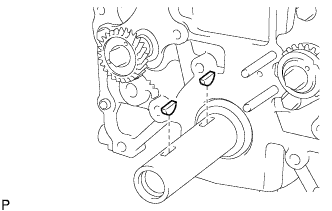
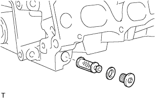

БЛОК ДВИГАТЕЛЯ > ПОВТОРНАЯ СБОРКА |
| 1. УСТАНОВИТЕ ШПОНКУ ШКИВА КОЛЕНЧАТОГО ВАЛА |
|  |
Установите 2 шпонки шкива на коленчатый вал.
| 2. УСТАНОВИТЕ УСПОКОИТЕЛЬ ЦЕПИ № 4 |
Установите успокоитель цепи и закрепите его 2 болтами.
| 3. УСТАНОВИТЕ ЦЕПЬ № 2 В СБОРЕ |
Установите ведущую звездочку, как показано на рисунке.
Установите цепь на звездочку и зубчатое колесо, совместив пластины с метками с установочными метками на звездочке и зубчатом колесе.
| *1 | Пластина с меткой (желтая) |
| *2 | Установочная метка |
Установите другое маркированное звено цепи за большой установочной меткой приводной шестерни уравновешивающего вала.
| *1 | Пластина с меткой (желтая) |
| *2 | Большая установочная метка |
Вставьте вал приводной шестерни уравновешивающего вала через приводную шестерню уравновешивающего вала таким образом, чтобы он вошел в отверстие упорного диска.
Совместите малую установочную метку приводной шестерни уравновешивающего вала с большой установочной меткой зубчатого колеса уравновешивающего вала.
| *1 | Большая установочная метка |
| *2 | Малая установочная метка |
| *3 | Пластина с меткой (желтая) |
Вверните болт в приводную шестерню уравновешивающего вала.
 |
Убедитесь, что все установочные метки совмещены с соответствующими маркированными звеньями.
| *1 | Большая установочная метка |
| *2 | Малая установочная метка |
| *3 | Пластина с меткой (желтая) |
| *4 | Установочная метка |
| 4. УСТАНОВИТЕ НАТЯЖИТЕЛЬ ЦЕПИ № 2 В СБОРЕ |
Установите натяжитель цепи в сборе и закрепите его гайкой.
Отведите стопорную пластину вниз, чтобы освободить фиксатор, и глубоко вдавите плунжер в натяжитель.
| *1 | Плунжер |
| *2 | Стопорная пластина |
Отведите стопорную пластину вверх, чтобы ввести фиксатор в зацепление, и вставьте в отверстие стопорной пластины шестигранный гаечный ключ.
| 5. УСТАНОВИТЕ УСПОКОИТЕЛЬ ЦЕПИ № 3 |
Установите успокоитель цепи и закрепите его 2 болтами.
| 6. УСТАНОВИТЕ УСПОКОИТЕЛЬ ЦЕПИ № 2 |
Установите успокоитель цепи и закрепите его болтом.
Извлеките штифт из натяжителя цепи в сборе и освободите плунжер.
| 7. УСТАНОВИТЕ КОНИЧЕСКУЮ РЕЗЬБОВУЮ ЗАГЛУШКУ № 1 |
 |
Установите резьбовую заглушку на блок цилиндров.
| 8. УСТАНОВИТЕ КРОНШТЕЙН МАСЛЯНОГО ФИЛЬТРА В СБОРЕ |
 |
С помощью торцевого гаечного ключа установите штуцер кронштейна масляного фильтра.
 |
Установите новую прокладку кронштейна масляного фильтра на кронштейн масляного фильтра.
| *1 | Кольцевое уплотнение |
| *2 | Прокладка кронштейна масляного фильтра |
Установите новое кольцевое уплотнение на штуцер кронштейна масляного фильтра.
Установите 2 новые прокладки и 2 резьбовые заглушки на кронштейн масляного фильтра.
 |
Установите кронштейн масляного фильтра и закрепите его 2 болтами и гайкой.
С помощью торцевого ключа на 27 мм установите патрубок масляного фильтра.
| 9. УСТАНОВИТЕ МАСЛЯНЫЙ ФИЛЬТР В СБОРЕ |
Проверьте и очистите установочную поверхность масляного фильтра.
Нанесите чистое моторное масло на прокладку нового масляного фильтра.
Навинтите маслянный фильтр на место вручную. Затяните его так,чтобы уплотнение прилегало к посадочной поверхности.
Затяните масляный фильтр с помощью SST.
В зависимости от места проведения работ выберите следующее.
Если есть достаточно места, затяните масляный фильтр с помощью динамометрического ключа.
| 10. УСТАНОВИТЕ ЗАДНИЙ САЛЬНИК КОЛЕНЧАТОГО ВАЛА |
Поместите стопор сальника на деревянные бруски.
| *1 | Деревянный брусок |
Нанесите на рабочую кромку нового сальника небольшое количество универсальной консистентной смазки.
С помощью SST запрессуйте новый сальник так, чтобы его поверхность была заподлицо с краем стопора сальника.
| 11. УСТАНОВИТЕ СТОПОР ЗАДНЕГО САЛЬНИКА КОЛЕНЧАТОГО ВАЛА |
Нанесите герметик в виде сплошного валика, как показано на рисунке.
| *1 | Герметик |
Установите стопор сальника и закрепите его 6 болтами.
| 12. УСТАНОВИТЕ ФИЛЬТР ГИДРАВЛИЧЕСКОГО КЛАПАНА ИЗМЕНЕНИЯ ФАЗ |
|  |
Убедитесь в отсутствии посторонних материалов на сетке фильтра.
Если есть посторонние вещества, тщательно очистите детали.
С помощью шестигранной головки на 8 мм установите новую прокладку и фильтр гидравлического клапана изменения фаз с резьбовой заглушкой.
| 13. УСТАНОВИТЕ ПРОКЛАДКУ ГОЛОВКИ БЛОКА ЦИЛИНДРОВ |
 |
Установите новую прокладку головки блока цилиндров на блок цилиндров таким образом, чтобы штамп Lot No. (№ партии) был сверху.
| *1 | Номер партии |
 | Передняя сторона |
| 14. УСТАНОВИТЕ ГОЛОВКУ БЛОКА ЦИЛИНДРОВ В СБОРЕ |
Установите головку блока цилиндров на блок цилиндров.
Поместите под болты головки блока цилиндров плоские шайбы.
Нанесите тонкий слой моторного масла на резьбу и под головки болтов головки блока цилиндров.
 |
Шаг 1:
В несколько этапов вверните и равномерно затяните 10 болтов головки блока цилиндров с плоскими шайбами. Последовательность затяжки показана на рисунке.
Отметьте краской переднюю сторону головки каждого болта крепления головки блока цилиндров.
Шаг 2:
Затяните болты головки блока цилиндров на 90° в той же последовательности, что и на шаге 1.
Шаг 3:
Затяните болты головки блока цилиндров с поворотом на 90° в той же последовательности, что и на шаге 1.
Убедитесь, что метки развернуты на 180° относительно исходного положения.
| 15. УСТАНОВИТЕ ЗВЕЗДОЧКУ РАСПРЕДВАЛА |
Зажмите распредвал в тисках, установите ведущую звездочку распредвала на распредвал и закрепите ее болтом звездочки.
| 16. УСТАНОВИТЕ ЗУБЧАТОЕ КОЛЕСО РАСПРЕДВАЛА В СБОРЕ |
Совместите отверстие под штифт и стопорный штифт и установите зубчатое колесо распредвала на распредвал.
| *1 | Стопорный штифт |
| *2 | Отверстие для поршневого пальца |
Слегка прижмите зубчатое колесо к распредвалу и вращайте колесо. Продвиньте колесо дальше, чтобы штифт вошел в канавку.
Убедитесь, что между фланцем зубчатого колеса и распредвалом нет зазора.
Зафиксировав зубчатое колесо распредвала на месте, вверните болт фланца.
Убедитесь, что зубчатое колесо распредвала может вращаться в сторону запаздывания и фиксируется в положении максимального запаздывания.
| 17. УСТАНОВИТЕ МЕХАНИЗМ РЕГУЛИРОВКИ ЗАЗОРА В ПРИВОДЕ КЛАПАНОВ В СБОРЕ |
Перед установкой каждого механизма регулировки зазора в приводе клапана обязательно проверяйте его (Нажмите здесь).
Установите 16 механизмов регулировки зазора в приводе клапана на головку блока цилиндров.
| 18. УСТАНОВИТЕ КОЛПАК ШТОКА КЛАПАНА |
Нанесите тонкий слой моторного масла на торцы штока клапана.
Установите 16 колпаков штоков клапанов на головку блока цилиндров.
| 19. УСТАНОВИТЕ РЫЧАГ ПРИВОДА КЛАПАНА № 1 В СБОРЕ |
Нанесите слой чистого моторного масла на выступы механизма регулировки зазора в приводе клапана и поверхности колпака штока клапана.
Установите 16 рычагов приводов клапанов, как показано на рисунке.
| *1 | Колпак штока клапана |
| *2 | Рычаг привода клапана |
| *3 | Механизм регулировки зазора в приводе клапана |
| *a | ПРАВИЛЬНО |
| *b | НЕПРАВИЛЬНО |
| 20. УСТАНОВИТЕ РАСПРЕДВАЛ |
Смажьте кулачки распредвала и шейки головки блока цилиндров чистым моторным маслом.
Установите распредвал и распредвал № 2, как показано на рисунке.
| 21. УСТАНОВИТЕ КРЫШКУ ПОДШИПНИКА РАСПРЕДВАЛА |
 |
Временно установите крышку подшипника распредвала № 1.
Определите правильное положение каждой крышки подшипника распредвала № 2 и установите их.
Установите новое кольцевое уплотнение на крышку подшипника распредвала № 1.
| *1 | Кольцевое уплотнение |
Временно закрепите маслоподводящую трубку.
 |
Вверните 21 болт и затяните их в порядке, показанном на рисунке.
| 22. УСТАНОВИТЕ ВЕДУЩЕЕ ЗУБЧАТОЕ КОЛЕСО КОЛЕНЧАТОГО ВАЛА |
Установите зубчатое колесо, как показано на рисунке.
| 23. УСТАНОВИТЕ УСПОКОИТЕЛЬ ЦЕПИ № 1 |
Закрепите успокоитель цепи болтом и гайкой.
| 24. УСТАНОВИТЕ ЦЕПЬ В СБОРЕ |
 |
Установите цепь на звездочку и зубчатое колесо, совместив пластины с метками с установочными метками на звездочке и зубчатом колесе.
| *1 | Установочная метка |
| *2 | Ключ |
| *3 | Пластина с меткой (оранжевая) |
| *4 | Пластина с меткой (желтая) |
Закрепите цепь ведущей звездочки цепи ГРМ на коленчатом валу с помощью веревки. Привяжите веревку рядом со звездочкой.
| 25. УСТАНОВИТЕ БАШМАК НАТЯЖИТЕЛЯ ЦЕПИ |
Установите башмак натяжителя и закрепите его болтом.
| 26. УСТАНОВИТЕ НАТЯЖИТЕЛЬ ЦЕПИ № 1 В СБОРЕ |
 |
Отведите стопорную пластину вверх, чтобы освободить фиксатор, и глубоко вдавите плунжер в натяжитель.
| *1 | Плунжер |
| *2 | Стопорная пластина |
Опустите стопорную пластину, чтобы ввести фиксатор в зацепление, и вставьте в отверстие стопорной пластины шестигранный гаечный ключ.
Установите новую прокладку и натяжитель цепи, закрепив их болтом и гайкой.
| 27. УСТАНОВИТЕ НАПРАВЛЯЮЩУЮ ЦЕПНОГО ПРИВОДА ГАЗОРАСПРЕДЕЛИТЕЛЬНОГО МЕХАНИЗМА |
 |
Установите новое кольцевое уплотнение на крышку подшипника распредвала.
| *1 | Кольцевое уплотнение |
Установите направляющую цепного привода и закрепите ее 2 болтами.
| 28. УСТАНОВИТЕ НАСОС СИСТЕМЫ ОХЛАЖДЕНИЯ В СБОРЕ |
Установите новую прокладку и закрепите насос системы охлаждения 8 болтами.
| 29. УСТАНОВИТЕ ПЕРЕПУСКНОЙ КЛАПАН МАСЛЯНОГО НАСОСА |
 |
Смажьте перепускной клапан моторным маслом.
Вставьте перепускной клапан и пружину в отверстие корпуса насоса.
Установите новую прокладку на пробку.
Заверните пробку с помощью торцевого ключа на 27 мм.
| 30. УСТАНОВИТЕ КРЫШКУ ЦЕПНОГО ПРИВОДА ГАЗОРАСПРЕДЕЛИТЕЛЬНОГО МЕХАНИЗМА В СБОРЕ |
Установите 3 новых кольцевых уплотнения в крышку цепного привода газораспределительного механизма, как показано на рисунке.
| *1 | Новое кольцевое уплотнение насоса системы охлаждения |
| *2 | Новое верхнее кольцевое уплотнение насоса системы охлаждения |
| *3 | Новое кольцевое уплотнение масляного насоса |
 |
Совместите шлицы ведущей шестерни масляного насоса и ведущего зубчатого колеса коленчатого вала, как показано на рисунке.
| *1 | Шлицы ведущей шестерни |
| *2 | Ведущая шестерня привода газораспределения |
Нанесите герметик в виде сплошного валика на крышку цепного привода газораспределительного механизма, как показано на рисунке.

| Область | Диаметр валика герметика | Расстояние от кромки крышки до центра валика герметика | Длина участка нанесения герметика | Выступание из головки блока цилиндров |
| A-A (зона, отмеченная пунктирной линией) | 2,5 - 4,0 мм (0,0984 - 0,157 дюйма) | 2,0 мм (0,0787 дюйма) | - | - |
| B-B (зона, отмеченная непрерывной линией) | Ширина 10 - 14 мм (0,394 - 0,551 дюйма), толщина 2,5 - 4,0 мм (0,0984 - 0,157 дюйма) | 6,0 мм (0,236 дюйма) | 46 мм (1,81 дюйма) от верхнего края болтового отверстия | - |
| C-C (зона, отмеченная непрерывной линией) | Ширина 10 - 14 мм (0,394 - 0,551 дюйма), толщина 2,5 - 4,0 мм (0,0984 - 0,157 дюйма) | 6,0 мм (0,236 дюйма) | 54 мм (2,13 дюйма) от верхнего края болтового отверстия | - |
| D-D (зона, отмеченная непрерывной линией) | Ширина 9,0 - 13 мм (0,354 - 0,512 дюйма) толщина 2,5 - 4,0 мм (0,0984 - 0,157 дюйма) | - | 13 мм (0,512 дюйма) от верхнего края болтового отверстия | - |
| E-E (зона, отмеченная непрерывной линией) | Ширина 9,0 - 13 мм (0,354 - 0,512 дюйма) толщина 2,5 - 4,0 мм (0,0984 - 0,157 дюйма) | - | 13 мм (0,512 дюйма) от верхнего края болтового отверстия | - |
| I - I (зона, отмеченная непрерывной линией) | 8,0 мм (0,315 дюйма) | - | 56,5 мм (2,22 дюйма) от нижней части головки блока цилиндров | 2,0–3,0 мм (0,0787–0,118 дюйма) |
| J | 10 мм (0,394 дюйма) | - | 20 мм (0,787 дюйма) | - |
| *1 | Головка блока цилиндров | *2 | Блок цилиндров |
| *3 | Герметик | *4 | Толщина слоя герметика |
| *5 | Ширина слоя герметика | *6 | Выступ |
Временно закрепите крышку цепного привода газораспределительного механизма 19 болтами и 2 гайками.

| Параметр / Устройство | Длина | Диаметр резьбы |
| Болт A | 75 мм (2,95 дюйма) | 10 мм (0,394 дюйма) |
| Болт B | 75 мм (2,95 дюйма) | 8 мм (0,315 дюйма) |
| Болт C | 90 мм (3,54 дюйма) | 8 мм (0,315 дюйма) |
| Болт D | 95 мм (3,74 дюйма) | 8 мм (0,315 дюйма) |
| Болт E | 35 мм (1,38 дюйма) | 8 мм (0,315 дюйма) |
| Болт F | 75 мм (2,95 дюйма) | 10 мм (0,394 дюйма) |
Затяните болты и гайки, за исключением болтов A и F, в следующем порядке: зона 1, зона 3, зона 2.
| *1 | Зона 1 | *2 | Зона 2 |
| *3 | Зона 3 | *4 | Зона 4 |
| *5 | Гайка | - | - |
Затяните болты A в следующем порядке: Зона 2 и зона 3.
Затяните болты F.
Затяните болты E в зоне 4.
| 31. УСТАНОВИТЕ НАТЯЖИТЕЛЬ ПОЛИКЛИНОВОГО РЕМНЯ В СБОРЕ |
Установите натяжитель ремня и временно закрепите его 3 болтами.
Установите натяжитель и закрепите его 3 болтами, затянув их в последовательности, указанной на рисунке.
| 32. УСТАНОВИТЕ РЕЗЬБОВУЮ ЗАГЛУШКУ |
 |
Нанесите герметик на резьбовую заглушку.
С помощью торцевого шестигранного ключа на 10 мм установите резьбовую заглушку.
| 33. УСТАНОВИТЕ САЛЬНИК КРЫШКИ ЦЕПНОГО ПРИВОДА ГАЗОРАСПРЕДЕЛИТЕЛЬНОГО МЕХАНИЗМА |
 |
Нанесите универсальную консистентную смазку на кромку нового сальника.
Временно установите сальник в крышку цепного привода газораспределительного механизма.
С помощью SST и молотка запрессуйте сальник так, чтобы его поверхность была заподлицо с краем крышки цепного привода ГРМ.
| 34. УСТАНОВИТЕ РЕЗЬБОВУЮ ШПИЛЬКУ МАСЛЯНОГО ПОДДОНА |
С помощью торцевых ключей "TORX" E5 и E7 вверните резьбовые шпильки.
| 35. УСТАНОВИТЕ ПОДДОН КАРТЕРА В СБОРЕ |
Установите новое уплотнительное кольцо.
 |
Нанесите герметик в виде сплошного валика, как показано на рисунке.
| Область | Диаметр валика герметика | Расстояние между краем крышки или центром отверстия под болт и центром участка, покрытого герметиком |
| A-A | 2,0-3,0 мм (0,0787-0,118 дюйма) | 8,0 мм (0,315 дюйма) |
| B - B | 2,0-3,0 мм (0,0787-0,118 дюйма) | 6,5 мм (0,256 дюйма) |
| *1 | Герметик |
Временно установите масляный поддон и закрепите его 16 болтами и 2 гайками.
| Параметр / Устройство | Длина |
| Болт A | 20 мм (0,787 дюйма) |
| Болт B | 40 мм (1,57 дюйма) |
 | Болт A |
 | Болт B |
 | Гайка |
Равномерно затяните 16 болта и 2 гайки в порядке, указанном на рисунке.
| 36. УСТАНОВИТЕ МАСЛОПРИЕМНИК С СЕТЧАТЫМ ФИЛЬТРОМ В СБОРЕ |
Установите новую прокладку и закрепите маслоприемник с сетчатым фильтром 2 болтами и 2 гайками.
| 37. УСТАНОВИТЕ ПОДДОН КАРТЕРА № 2 В СБОРЕ |
Нанесите герметик в виде сплошного валика, как показано на рисунке.
| *1 | Герметик |
 |
Временно установите масляный поддон и закрепите его 20 болтами и 2 гайками.
| Болт |
| Гайка |
Равномерно затяните 20 болта и 2 гайки в порядке, указанном на рисунке.
Установите новую прокладку и пробку сливного отверстия.
| 38. УСТАНОВИТЕ ШКИВ КОЛЕНЧАТОГО ВАЛА |
Совместите шпоночную канавку шкива с установочной шпонкой шкива и наденьте шкив.
С помощью SST затяните новый болт шкива коленчатого вала.
| *a | Удержание |
| Поверните |
| 39. УСТАНОВИТЕ КРЫШКУ ГОЛОВКИ БЛОКА ЦИЛИНДРОВ В СБОРЕ |
 |
Установите 2 новые прокладки крышки на крышку головки блока цилиндров.
Нанесите герметик Seal Packing в местах, показанных на рисунке.
| Герметик |
 |
Временно закрепите крышку головки блока цилиндров 19 болтами и 2 гайками.
Равномерно затяните 19 болтов и 2 гайки в порядке, указанном на рисунке.
Убедитесь, что болты 1-8 затянуты с заданным крутящим моментом, проверив их по порядку номеров. Затяните болты согласно требованиям.
| 40. УСТАНОВИТЕ ТЕРМОСТАТ |
 |
Установите на термостат новую прокладку.
Установите термостат паровыпускным клапаном вверх.
| 41. УСТАНОВИТЕ ВПУСКНОЙ ПАТРУБОК ОХЛАЖДАЮЩЕЙ ЖИДКОСТИ |
Закрепите новую прокладку и впускной патрубок охлаждающей жидкости с помощью 2 гаек и болта.
| 42. УСТАНОВИТЕ ГИДРАВЛИЧЕСКИЙ КЛАПАН ИЗМЕНЕНИЯ ФАЗ В СБОРЕ |
 |
Установите на гидравлический клапан изменения фаз новое кольцевое уплотнение.
| *1 | Новое кольцевое уплотнение |
Нанесите на уплотнительное кольцо тонкий слой моторного масла.
Установите гидравлический клапан изменения фаз и закрепите его болтом.
Подсоедините разъем гидравлического клапана изменения фаз.
Установите кронштейн зажима жгута проводов и закрепите его болтом.
Установите 2 зажима и подсоедините 2 разъема.
| 43. УСТАНОВИТЕ ДАТЧИК ПОЛОЖЕНИЯ КОЛЕНЧАТОГО ВАЛА |
 |
Нанесите тонкий слой моторного масла на уплотнительное кольцо датчика положения коленчатого вала.
| *1 | Кольцевое уплотнение |
Установите датчик положения распредвала и закрепите его болтом.
Подсоедините разъем датчика положения коленчатого вала и закрепите зажим жгута проводов.
| 44. УСТАНОВИТЕ ДАТЧИК ПОЛОЖЕНИЯ РАСПРЕДВАЛА |
 |
Нанесите тонкий слой моторного масла на кольцевое уплотнение датчика положения распредвала.
| *1 | Кольцевое уплотнение |
Установите датчик положения распредвала и закрепите его болтом.
Подсоедините разъем датчика положения распредвала.
| 45. УСТАНОВИТЕ САПУН В СБОРЕ |
Нанесите герметик на 2-3 витка резьбы клапана.
С помощью ключа на 22 мм для контргайки шарового шарнира установите клапан принудительной вентиляции картера.
Подсоедините шланг системы принудительной вентиляции картера.
| 46. УСТАНОВИТЕ КРЫШКУ МАСЛОНАЛИВНОЙ ГОРЛОВИНЫ В СБОРЕ |
Установите прокладку на крышку маслоналивной горловины.
Установите крышку маслоналивной горловины.
| 47. УСТАНОВИТЕ ДАТЧИК ТЕМПЕРАТУРЫ ОХЛАЖДАЮЩЕЙ ЖИДКОСТИ |
Установите новую прокладку на датчик температуры охлаждающей жидкости.
С помощью удлиненной торцевой головки на 19 мм закрепите датчик температуры охлаждающей жидкости двигателя.
Подсоедините разъем датчика температуры охлаждающей жидкости двигателя.
| 48. УСТАНОВИТЕ ДАТЧИК ДЕТОНАЦИИ |
 |
Закрепите датчик детонации болтом.
| Передняя сторона |
Присоедините разъем датчика детонации.
| 49. УСТАНОВИТЕ КОНТАКТНЫЙ ДАТЧИК ДАВЛЕНИЯ МОТОРНОГО МАСЛА |
Нанесите герметик на 2–3 витка резьбы контактного датчика давления масла.
С помощью удлиненной торцевой головки на 24 мм установите контактный датчик давления жидкости.
Подсоедините разъем контактного датчика давления жидкости.
| 50. УСТАНОВИТЕ СВЕЧУ ЗАЖИГАНИЯ |
Установите 4 свечи зажигания с помощью свечного ключа на 16 мм.